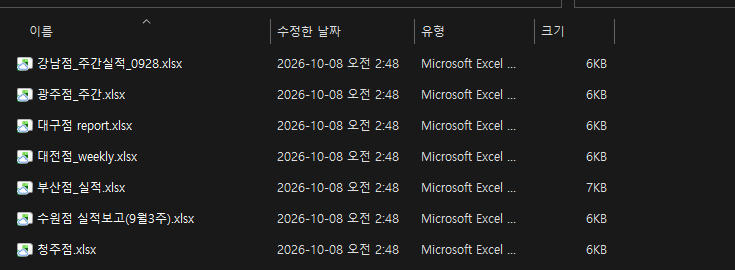

틀리지 않는
자동 취합
지점·거래처 엑셀을 매주 손으로 합치는 담당자님을 위한 Windows 프로그램입니다. 가상 자료로 시험을 마쳤고, 실제 회사 파일로 함께 확인해 볼 첫 고객을 찾고 있습니다.
양식 견본(개인정보를 지운 것)을 보내 주시면 2일 안에 되는지, 안 되는지와 그 이유를 답해 드립니다.

매주 월요일 아침,이런 말 하고 계신가요?
- 매주 같은 엑셀을 열고, 같은 칸을 복사하고, 같은 합계를 다시 더합니다.
- 어렵지는 않은데 틀리면 안 돼서, 아무도 대신해 주지 않아요. 월요일 아침이 통째로 사라집니다.
- 자동화는 무서워요. 검은 창, 영어 화면, 키 발급…
어렵지 않지만 틀리면 안 되는 일.
그 일을 프로그램이 대신합니다.
넣어 두기만 하면,정한 요일에 보고서가 옵니다.
모으고, 열 이름을 맞추고, 합친 뒤, 원본 합계와 대조해 보고서로 보내기까지 한 번에 이어집니다.
- 모으기
- 열 이름 맞추기
- 합치기
- 원본 합계와 대조
- 보고서 메일
들어오는 것
- 받는 폴더에 넣어 둔 지점·거래처 엑셀
- 취합 전용 Gmail에 첨부로 온 엑셀
- 파일 이름·열 이름·칸 순서가 서로 다른 양식
나오는 것
- 보고서 엑셀 1개(시트 6장)가 담당자님 메일로
- 맨 위에 미제출 목록, 틀린 곳은 확인필요 시트에
- 모든 줄에 원본 파일·시트·행 번호
보고서 시트 6장: 요약 · 지점별 · 확인필요 · 검산 · 통합데이터 · 매칭결과. 처음 보는 열 이름만 여쭤보고, 한 번 알려 주시면 기억합니다.
설치 전과 후,무엇이 달라지나요
| 지금 | 설치 후 |
|---|---|
| 파일을 하나씩 열어 복사·붙여넣기 | 받는 폴더(또는 취합 전용 Gmail)에 넣어 두기만 |
| "매출액"·"판매금액"·"Amount"를 눈으로 맞춤 | 프로그램이 맞추고, 모르는 것만 묻고, 한 번 알려 주면 기억 |
| 다 합치고 계산기로 다시 더함 | 원본 합계와 모은 합계를 매번 비교한 검산 표 |
| "이 숫자 어디서 나왔지?" | 모든 줄에 원본 파일·시트·행 번호 |
| 누가 안 냈는지 메신저로 확인 | 미제출 목록이 보고서 맨 위에 |
어떻게 틀리지 않게 하나요
- AI는 숫자를 만지지 않습니다. AI는 열 이름을 맞추는 "고르기"만 하고, 계산은 프로그램 코드가 합니다.
- AI에 보내는 것은 열 제목과 값의 모양뿐입니다. AI 키가 없어도 핵심 기능은 동작합니다.
- 모르면 지어내지 않고 여쭤봅니다.
- 같은 입력에는 같은 결과가 나옵니다.
- 자료는 고객 PC 밖으로 나가지 않습니다. 올리지 않습니다. 올릴 곳이 없습니다. (오토리는 서버가 없습니다)

문제가 생기면숨기지 않고 남깁니다
자동으로 처리하기 애매한 것은 사람이 볼 수 있게 표시합니다.
| 이럴 때 | 이렇게 남깁니다 |
|---|---|
| 안 낸 곳이 있을 때 | 보고서 맨 위 미제출 목록 |
| 같은 자료가 두 번 들어왔을 때 | 확인필요 시트에 표시, 자동으로 더하지 않음 |
| 처음 보는 열 이름 | 지어내지 않고 여쭤봄 |
| 합계가 원본과 다를 때 | 검산 시트에 어느 파일인지 표시 |
| 깨진 파일·빈 파일 | 멈추지 않고 건너뛴 뒤 목록에 남김 |

합계가 정말 맞는지돌려 보고 나서야 내놓았습니다
- 317개자동 시험 통과
- 2,000개무작위 표·양식 각 1,000개(가상 엑셀) — 합계가 한 번도 다르지 않음
- 18종깨진 파일·빈 파일 등 이상한 파일에도 멈추지 않음
- PC 2대실제 Windows 11 PC(한글 이름 PC 포함)에서 설치 → Gmail 첨부 가져오기 → 보고서 메일 도착 → 자동 실행 확인
- 0건AI 점검 5회, 틀린 자동 반영
실제 회사 자료로 잰 절감 시간은 아직 없습니다. 그래서 "몇 시간 절약" 같은 말을 쓰지 않습니다.
무료 확인부터천천히 시작합니다
- 무료 확인양식 견본(개인정보를 지운 것)을 보내 주시면 2일 안에 되는지, 안 되는지와 이유를 답합니다.
- 원격 설치한글 화면, 버튼 하나. 비밀번호는 절대 묻지 않습니다.
- 처음 2주는 병행 운영보고서를 담당자님만 받습니다. 지금 하시던 방식과 나란히 비교합니다.
- 메일 자동 가져오기익숙해지면 취합 전용 Gmail의 첨부를 자동으로 가져오게 켭니다.
- 윗분께도 보고서그다음 윗분께도 보고서가 가게 합니다.
넘겨 드리는 것
- 설치된 프로그램
- 설치 가이드 · 사용 설명서
- 첫 보고서
- 2주 병행 운영 · 수정 2회
엑셀 자동 취합
150,000원
양식 1종, 20곳까지 · 작업 기간 5일
- 원격 설치
- 병행 운영 2주
- 수정 2회
월 유지보수 50,000원 (선택)
홈페이지에서는 결제를 받지 않습니다.
맡기시기 전에못 하는 것부터 말씀드립니다
못 하는 것
- PDF·사진·HWP·암호 걸린 엑셀
- 복잡한 서식, 코드표 연결, 회사 고유 양식 채우기 (아직)
- 메신저로 받은 파일 자동 수집, 회사 메일 직접 연결 (지금은 Gmail만)
- Windows 전용, PC가 꺼져 있으면 돌지 않음
권하지 않는 분
- 파일이 2~3개뿐이거나 가끔만 합치는 분 — Copilot이나 Claude 같은 AI 채팅으로 직접 하시는 편이 낫습니다.
- 양식이 매번 완전히 달라지는 곳
다른 방법이 나을 때도있습니다
회사 이름 대신 방법의 종류로 비교했습니다. 상대가 나은 점도 함께 적었습니다.
| 방법 | 그쪽이 나은 것 | 오토리가 나은 것 |
|---|---|---|
| AI 채팅 직접 사용 | 문서형 보고서, 유연함 | 매주 사람 없이 실행, 같은 입력에 같은 결과, 검산 |
| AI 시트 도구 | 일회성 합치기·차트 | 파일을 올리지 않음, 원본 합계 대조, 반복 실행 |
| 오피스 내장 AI | 열린 파일 분석 | 여러 곳에서 온 파일을 반복해서 취합, 검산 |
| 노코드 자동화 도구 | 연결할 수 있는 서비스가 많음 | 한 가지 일 전용, 버튼 하나, 한글 오류 안내 |
| 맞춤 외주 개발 | 넓은 기술 범위, 실적과 후기 | 낮은 가격, 빠른 설치, 못 하는 것 공개 |
자주묻는 질문
엑셀 여러 개 합치기를 자동으로 할 수 있나요?
네. 지점·거래처에서 들어오는 엑셀을 정한 요일에 모아 합치고(취합·집계·병합), 원본 합계와 비교한 검산 표까지 만든 보고서를 메일로 보내 드립니다. 다만 파일이 2~3개뿐이라면 AI 채팅으로 직접 하시는 편이 낫습니다.
엑셀을 잘 몰라도 되나요?
됩니다. 한글 화면에 버튼 하나이고, 처음 설치는 원격으로 같이 합니다. 명령어를 치실 일은 없습니다.
우리 자료가 밖으로 나가나요?
나가지 않습니다. 자료는 담당자님 PC 안에서만 처리합니다. 오토리는 자료를 받아 둘 서버가 없습니다. AI를 켜면 열 제목과 값의 모양만 보내고, AI를 꺼도 핵심 기능은 동작합니다.
AI가 숫자를 바꾸지는 않나요?
바꾸지 않습니다. AI는 열 이름을 맞추는 "고르기"만 하고, 계산은 프로그램 코드가 합니다. 모르는 것은 지어내지 않고 여쭤봅니다.
회사 메일로도 되나요?
지금은 Gmail만 됩니다. 취합 전용 Gmail을 하나 만들어 쓰시거나, 받는 폴더에 파일을 넣어 두시면 됩니다.
Mac에서도 되나요?
안 됩니다. Windows 전용이고, PC가 켜져 있어야 정한 시간에 돌아갑니다.
양식이 바뀌면요?
처음 보는 열 이름은 여쭤보고, 한 번 알려 주시면 기억합니다. 양식이 매번 완전히 달라지는 곳에는 권하지 않습니다.
시범 고객은 무엇을 하면 되나요?
양식 견본(개인정보를 지운 것)을 오픈채팅이나 이메일로 보내 주시면 됩니다. 실제로 돌려 보고 2일 안에 되는지, 안 되는지와 이유를 답해 드립니다. 된다고 확인된 경우에만 진행합니다.
우리 엑셀, 자동 취합 되는지
먼저 확인해 보세요.
양식 견본(개인정보를 지운 것)을 보내 주시면 2일 안에 되는지, 안 되는지와 그 이유를 답해 드립니다.